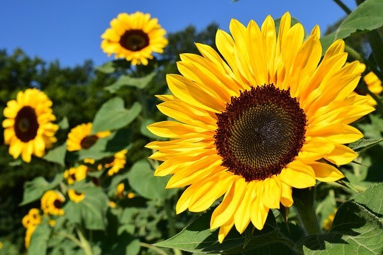

식물에 대한 페이지

해바라기에 대한 정의
해바라기(Helianthus annuus)는 데이지 같은 큰 꽃 면을 가진 일년생 식물입니다.
학명은 그리스어 helios(태양)와 anthos(꽃)의 합성어입니다.
꽃은 다양한 색상(노란색, 빨간색, 주황색, 적갈색, 갈색)이 있으며 일반적으로는 밝은 노란색이며
갈색의 중심 부분이 씨앗으로 가득 찬 무거운 머리를 가진 꽃입니다. 해바라기는 꽃을 돌려 태양의
움직임을 따라 하늘을 가로질러 동쪽에서 서쪽으로 이동한 다음 밤에 돌아와 동쪽을 향하여 다시 아침 해를 맞을 준비를 합니다.
오늘날 사용할 수 있는 해바라기의 종류는 수없이 많기 때문에 가지가 나거나 단일 줄기가 있는 것,
수분 매개자를 위한 충분한 꽃가루를 생산하거나 꽃가루가 없는 것(부케에 가장 적합),
작게 유지되거나 정원의 나머지 부분보다 높이 솟아 있는 것, 또는 식용 종자를 생산하는 것 중에서 개인의 정원에 맞는 해바라기를 선택하는 것이 좋습니다.
해바라기 관련 정보 링크 소개
해바가리에 대한 자세한 정보는 이
링크를 참조하십시오.